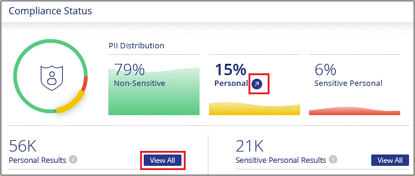
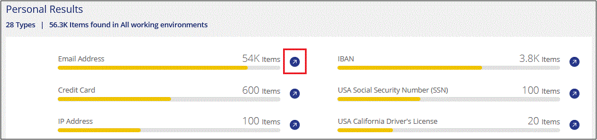
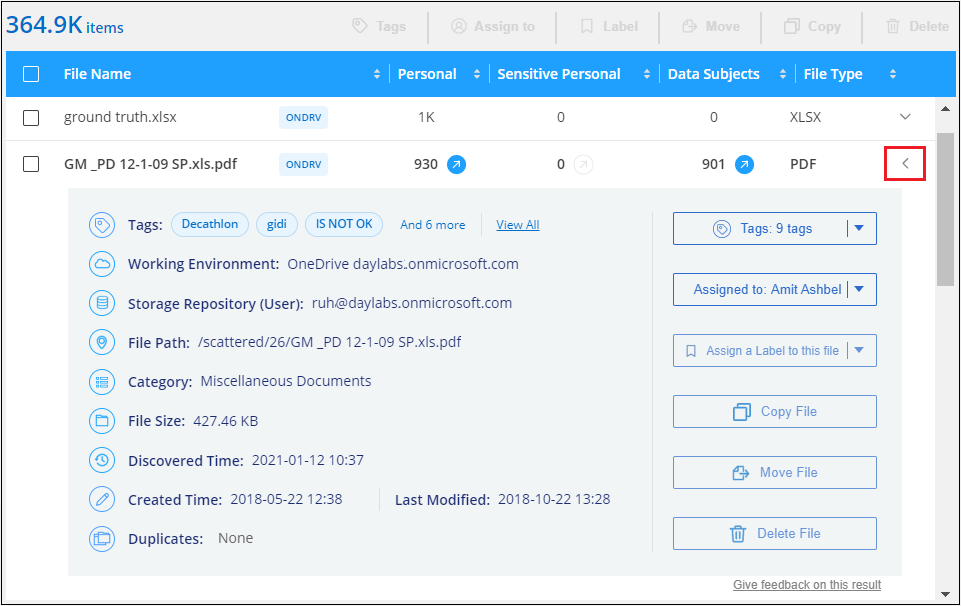
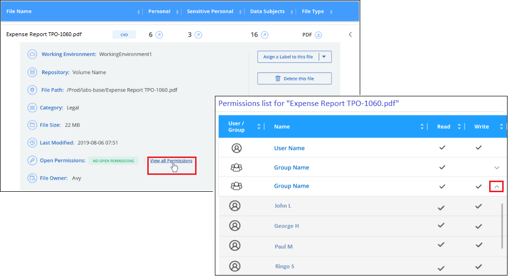

ドキュメントの変更をリクエスト
ドキュメントの変更をリクエスト GitHub で編集
GitHub で編集 寄稿者向けガイド
寄稿者向けガイド組織に保存されているデータのコンプライアンスの詳細を表示する
組織内の個人データと機密性の高い個人データに関する詳細を表示することで、個人データを管理できます。また、クラウドデータで見つかったカテゴリやファイルタイプを確認することで、データを可視化することもできます。

|
このセクションで説明する機能は、データソースに対して完全な分類スキャンを実行することを選択した場合にのみ使用できます。マッピングのみのスキャンを実行したデータソースでは、ファイルレベルの詳細は表示されません。 |
デフォルトでは、 Cloud Data Sense ダッシュボードには、すべての作業環境とデータベースのコンプライアンスデータが表示されます。

一部の作業環境のデータだけを表示する場合は、 それらの作業環境を選択します。
また、 [ データ調査 ] ページから結果をフィルタリングして、結果のレポートを CSV ファイルとしてダウンロードすることもできます。を参照してください [ データ調査 ] ページでデータをフィルタリングします を参照してください。
個人データを含むファイルを表示する
Cloud Data Sense は、データ内の特定の単語、文字列、パターン（ Regex ）を自動的に識別します。たとえば、個人識別情報（ PII ）、クレジットカード番号、社会保障番号、銀行口座番号、パスワード、 その他。 "すべてのリストを参照してください"。
また、スキャン対象のデータベースサーバを追加した場合、 Data Fusion の機能を使用してファイルをスキャンし、データベースから一意の識別子がこれらのファイルまたは他のデータベースのいずれに存在するかを特定できます。を参照してください "Data Fusion を使用して個人データ識別子を追加する" を参照してください。
一部のタイプの個人データについては、データセンスは _ 近接性検証 _ を使用してその結果を検証します。検証は、見つかった個人データに近接した 1 つまたは複数の定義済みキーワードを検索することによって行われます。たとえば、データセンスは米国を識別しますソーシャルセキュリティ番号（ SSN ）は、 IT の横に近接語（ SSN_or_social security など）が表示されている場合、 SSN として表示されます。 "個人データのテーブル" データセンスがプロキシミティ検証を使用する場合に表示されます
-
Cloud Manager の上部で、 * Data Sense * をクリックし、 * Compliance * タブをクリックします。
-
すべての個人データの詳細を調査するには、個人データの割合の横にあるアイコンをクリックします。

-
特定の種類の個人データの詳細を調査するには、 [ * すべて表示 * ] をクリックしてから、特定の種類の個人データの [ 調査結果 * ] アイコン（電子メールアドレスなど）をクリックします。

-
特定のファイルの検索、ソート、詳細の展開、 * 調査結果 * をクリックしてマスクされた情報を表示、またはファイルリストをダウンロードして、データを調査します。

機密性の高い個人データを含むファイルを表示する
クラウドデータセンスは、などのプライバシー規制によって定義された、特別な種類の機密情報を自動的に識別します "GDPR の第 9 、 10 記事"。たとえば、人の健康、民族の起源、性的指向に関する情報などです。 "すべてのリストを参照してください"。
Cloud Data Sense は、人工知能（ AI ）、自然言語処理（ NLP ）、機械学習（ ML ）、コグニティブコンピューティング（ CC ）を使用して、スキャンするコンテンツの意味を理解し、エンティティを抽出してそれに応じて分類します。
たとえば、機密性の高い GDPR データカテゴリの 1 つは民族起源です。データセンスは NLP の能力を持つため、「ジョージ・メキシカン」と書かれた文（ GDPR の第 9 条に規定されている機密データを示す文）と「ジョージ・メキシカン料理を食べている文（ George is exican food ）」の違いを区別することができます。
|
|
機密性の高い個人データをスキャンする場合は、英語のみがサポートされます。言語のサポートは、あとで追加されます。 |
-
Cloud Manager の上部で、 * Data Sense * をクリックし、 * Compliance * タブをクリックします。
-
機密性の高い個人データの詳細を調べるには、個人データの割合の横にあるアイコンをクリックします。

-
特定のタイプの機密個人データの詳細を調べるには、 [ * すべて表示 * ] をクリックし、特定のタイプの機密個人データの [ 調査結果 * ] アイコンをクリックします。

-
特定のファイルの検索、ソート、詳細の展開、 * 調査結果 * をクリックしてマスクされた情報を表示、またはファイルリストをダウンロードして、データを調査します。
カテゴリ別にファイルを表示します
Cloud Data Sense は、スキャンしたデータをさまざまなタイプのカテゴリに分割します。カテゴリは、各ファイルのコンテンツとメタデータの AI 分析に基づくトピックです。 "カテゴリのリストを参照してください"。
カテゴリを使用すると、保有している情報の種類を表示して、データの状況を把握することができます。たとえば、履歴書や従業員契約などのカテゴリには機密データを含めることができます。結果を調査すると、従業員契約が安全でない場所に保存されていることがわかります。その後、その問題を修正できます。
|
|
英語、ドイツ語、およびスペイン語は、カテゴリでサポートされています。言語のサポートは、あとで追加されます。 |
-
Cloud Manager の上部で、 * Data Sense * をクリックし、 * Compliance * タブをクリックします。
-
メイン画面から上位 4 つのカテゴリのいずれかの * 調査結果 * アイコンを直接クリックするか、 * すべて表示 * をクリックして、いずれかのカテゴリのアイコンをクリックします。

-
特定のファイルの検索、ソート、詳細の展開、 * 調査結果 * をクリックしてマスクされた情報を表示、またはファイルリストをダウンロードして、データを調査します。
ファイルタイプ別にファイルを表示する
Cloud Data Sense は、スキャンしたデータをファイルタイプ別に分類します。ファイルタイプを確認すると、特定のファイルタイプが正しく保存されない可能性があるため、機密データを制御するのに役立ちます。 "ファイルタイプのリストを参照してください"。
たとえば ' 組織に関する非常に機密性の高い情報を含む CAD ファイルを保存する場合がありますセキュリティで保護されていない場合は、権限を制限するか、ファイルを別の場所に移動することで、機密データを制御できます。
-
Cloud Manager の上部で、 * Data Sense * をクリックし、 * Compliance * タブをクリックします。
-
メイン画面で上位 4 つのファイルタイプのうちの 1 つに対応する * 調査結果 * アイコンをクリックするか、 * すべて表示 * をクリックして、任意のファイルタイプのアイコンをクリックします。

-
特定のファイルの検索、ソート、詳細の展開、 * 調査結果 * をクリックしてマスクされた情報を表示、またはファイルリストをダウンロードして、データを調査します。
ファイルメタデータを表示しています
[ データ調査結果 ] ペインで、をクリックできます  をクリックすると、単一のファイルについてファイルのメタデータが表示されます。
をクリックすると、単一のファイルについてファイルのメタデータが表示されます。
 ページのファイルのメタデータの詳細を示すスクリーンショット。"]
ファイルが存在する作業環境とボリュームを表示するだけでなく、メタデータには、ファイル権限、ファイルの所有者、このファイルの重複がないかどうか、および AIP ラベルが割り当てられている場合など、より多くの情報が表示されます "クラウドデータセンスで AIP を統合"）。この情報は、を計画している場合に役立ちます "ポリシーを作成します" データのフィルタリングに使用できるすべての情報が表示されます。
すべてのデータソースについて、すべての情報が表示されるわけではなく、そのデータソースに適した情報だけが表示されることに注意してください。たとえば、ボリューム名、権限、および AIP ラベルは、データベースファイルには関係ありません。
単一のファイルの詳細を表示する場合は、ファイルに対していくつかの操作を実行できます。
-
ファイルは任意の NFS 共有に移動またはコピーできます。を参照してください "ソースファイルを NFS 共有に移動しています" および "ソースファイルを NFS 共有にコピーしています" を参照してください。
-
ファイルを削除できます。を参照してください "ソースファイルを削除しています" を参照してください。
-
ファイルに特定のステータスを割り当てることができます。を参照してください "タグの適用" を参照してください。
-
ファイルに対して実行する必要があるフォローアップアクションを担当するファイルを Cloud Manager ユーザに割り当てることができます。を参照してください "ファイルへのユーザの割り当て" を参照してください。
-
AIP ラベルを Cloud Data Sense と統合している場合は、このファイルにラベルを割り当てるか、すでに存在する場合は別のラベルに変更できます。を参照してください "AIP ラベルを手動で割り当てる" を参照してください。
ファイルの権限を表示しています
ファイルへのアクセス権を持つすべてのユーザーまたはグループのリストと、そのファイルに含まれるアクセス権の種類を表示するには、 * すべてのアクセス権を表示 * をクリックします。このボタンは、 CIFS 共有、 SharePoint 、 OneDrive 内のファイルに対してのみ使用できます。

ユーザまたはグループの名前をクリックすると、 [ 調査 ] ページにそのユーザまたはグループの名前が [ ユーザ / グループの権限 ] フィルタに表示され、そのユーザまたはグループがアクセスできるすべてのファイルが表示されます。
ユーザ名とグループ名ではなく SID （セキュリティ識別子）が表示される場合は、 Active Directory をデータセンスに統合する必要があります。 "詳細については、「方法」を参照してください"。
ストレージシステム内に重複ファイルがないかどうかを確認しています
重複ファイルがストレージシステムに保存されているかどうかを確認できます。これは、ストレージスペースを節約できる領域を特定する場合に便利です。また、特定の権限や機密情報を持つファイルが、ストレージシステム内で不必要に重複しないようにすることもできます。
重複ファイルのリストをダウンロードし、ストレージ管理者に送信して、削除可能なファイルをユーザが判別できるようにします。または "ファイルを削除します" 特定のバージョンのファイルが不要であることが確信できる場合は、自分自身で実行します。
重複するすべてのファイルを表示します
スキャンする作業環境およびデータソースで複製されているすべてのファイルのリストが必要な場合は、 [ データの調査 ] ページで、 [ 重複 ] > [ 重複しているもの ] というフィルタを使用できます。
すべてのファイルタイプ（データベースを除く）から重複しているすべてのファイルが 50 MB 以上のサイズで、個人情報または機密情報を含むすべてのファイルが結果ページに表示されます。
特定のファイルが複製されているかどうかを表示します
1 つのファイルに重複があるかどうかを確認するには、 [ データ調査結果 ] ペインでをクリックします  をクリックすると、単一のファイルについてファイルのメタデータが表示されます。特定のファイルが重複している場合、この情報は _Duplicats_field の横に表示されます。
をクリックすると、単一のファイルについてファイルのメタデータが表示されます。特定のファイルが重複している場合、この情報は _Duplicats_field の横に表示されます。
重複したファイルとその場所のリストを表示するには、 [ * 詳細の表示 * ] をクリックします。次のページで、 [ 重複の表示 *] をクリックして、 [ 調査 ] ページでファイルを表示します。


|
このページで指定されている「ファイルハッシュ」値を使用して、 ［ 調査 ］ ページに直接入力すると、いつでも特定の重複ファイルを検索したり、ポリシーで使用することができます。 |
特定の作業環境のダッシュボードデータの表示
Cloud Data Sense ダッシュボードの内容をフィルタリングして、すべての作業環境とデータベース、または特定の作業環境のコンプライアンスデータを表示できます。
ダッシュボードをフィルタすると、 Data Sense によって、選択した作業環境だけにコンプライアンスデータとレポートがスコープされます。
-
フィルタドロップダウンをクリックし、データを表示する作業環境を選択して、 * 表示 * をクリックします。

[ データ調査 ] ページでデータをフィルタリングします
調査ページの内容をフィルタリングして、表示する結果のみを表示できます。CSV バージョンのコンテンツをリファインした後でレポートとして保存する場合は、をクリックします  ボタン"] ボタンを押します。
ボタン"] ボタンを押します。

-
トップレベルのタブでは、ファイル（非構造化データ）またはデータベース（構造化データ）のデータを表示できます。
-
各列の上部にあるコントロールを使用して、結果を数値またはアルファベット順にソートできます。
-
左側のペインフィルタを使用すると、次の属性を選択して結果を絞り込むことができます。
フィルタ 詳細 ポリシー
ポリシーを選択します。実行します "こちらをご覧ください" をクリックして、既存のポリシーのリストを表示し、独自のポリシーを作成します。
[ アクセス許可 ] を開きます
権限のタイプを選択します
ユーザ / グループの権限
ユーザ名、グループ名、または名前の一部を入力します
ファイルの所有者
ファイル所有者名を入力します
ラベル
AIP ラベルを選択します
作業環境タイプ（ Working Environment Type ）
作業環境のタイプを選択します。OneDrive と SharePoint は、「クラウドアプリ」に分類されています。
作業環境名
特定の作業環境を選択します
ストレージリポジトリ
ボリュームやスキーマなどのストレージリポジトリを選択します
ファイルパス
部分パスまたは完全パスを入力してください
カテゴリ
を選択します "カテゴリのタイプ"
感度レベル
感度レベルを選択します
個人データ
を選択します "個人データの種類"
機密性の高い個人データ
を選択します "機密性の高い個人データのタイプ"
データの件名
データ主体のフルネームまたは既知の識別子を入力します
ファイルタイプ
を選択します "ファイルのタイプ"
ファイルサイズ
ファイルサイズの範囲を選択します
作成時刻（ Created Time ）
ファイルを作成したときの範囲を選択します
検出時刻
データ検出でファイルが検出されたときの範囲を選択します
最終更新日
ファイルが最後に変更されたときの範囲を選択します
最後にアクセスした
ファイルが最後にアクセスされたときの範囲を選択します。データがスキャンするファイルのタイプの場合、これは最後にデータ検出がファイルをスキャンしたときです。
重複
リポジトリ内でファイルを複製するかどうかを選択します
ファイル・ハッシュ
ファイルのハッシュを入力し、名前が異なる場合でも特定のファイルを検索します
タグ
タグを選択します
割り当て先
ファイルが割り当てられているユーザーの名前を選択します
-
[ フィルタ ] ペインの上部にある _Policies_filter には、保存されたデータベースクエリや [ お気に入り ] リストなど、よく要求されるフィルタの組み合わせを提供するカスタムフィルタがリストされます。実行します "こちらをご覧ください" 事前定義されたポリシーのリストを表示し、独自のカスタムポリシーを作成する方法を確認できます。
各ファイルリストレポート（ CSV ファイル）に含まれる内容
各 [ 調査 ] ページで、をクリックできます ボタン"] ボタンをクリックして、特定されたファイルの詳細を含むファイルリスト（ CSV 形式）をダウンロードします。データ検出で、構造化データ（データベーステーブル）と非構造化データ（ファイル）の両方がスキャンされている場合は、ダウンロードした ZIP ファイルに 2 つのレポートが含まれています。
10 、 000 件を超える結果がある場合は、上位 10 、 000 件のみがリストに表示されます。
非構造化データ・レポート * には、次の情報が含まれています。
-
ファイル名
-
場所のタイプ
-
作業環境の名前
-
ストレージリポジトリ（ボリューム、バケット、共有など）
-
作業環境のタイプ
-
ファイルパス
-
ファイルタイプ
-
ファイルサイズ
-
時刻を作成しました
-
最終更新日
-
最後にアクセスした
-
ファイルの所有者
-
カテゴリ
-
個人情報
-
機密性の高い個人情報
-
削除の検出日
削除の検出日は、ファイルが削除または移動された日付を示します。これにより、機密ファイルがいつ移動されたかを識別できます。削除されたファイルは、ダッシュボードまたは [ 調査 ] ページに表示されるファイル番号カウントの一部ではありません。ファイルは CSV レポートにのみ表示されます。
構造化データレポート * には、次の情報が含まれています。
-
DB テーブル名
-
場所のタイプ
-
作業環境の名前
-
ストレージリポジトリ（スキーマなど）
-
列数
-
行数
-
個人情報
-
機密性の高い個人情報